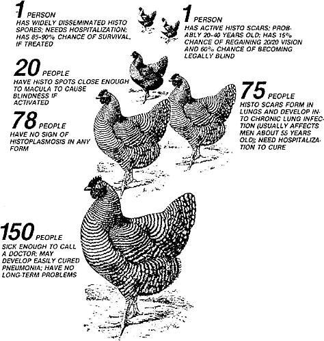
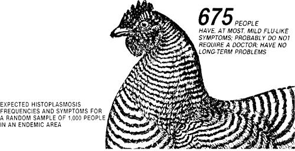

You may think you just have the flu, or that your sudden eye problem is merely a sign of weariness. However, if you've ever been around a chicken coop, a pigeon roost, or in a bat filled cave, that persistent malady or visual disorder could be evidence of . . .
Finally, the Thanksgiving holidays had arrived . . . and not a moment too soon! My last few days of teaching had been the pressured, emotional sort that nightmares are made of . . . so I wasn't surprised when, on the day before Thanksgiving, I came down with what I assumed was a light case of the flu. It was typical, because my body-like those of so many other educators-knew when it could and could not get sick. If it was going to collapse, it always waited until the first 48 hours of vacation . . . and then bounced back, ready to go, when classes resumed.
MORE THAN TIRED EYES
Sure enough, by the end of the weekend I was feeling fine. I wasn't even too upset at the thought of that 6:30 AM alarm set for the next morning. (After all, a four-week semester break was due in less than 20 days!) Yet early Monday, when the radio began broadcasting the news, I peeked out from under the pillow . . . and my right eye was so tired it couldn't see the radio. And while I drove the 46-mile trip to work, my eyes still seemed to be struggling to focus. However, it was Monday, a day when nothing ever functions quite right.
During the next two weeks, though, my eye problem got worse. Lines that were straight didn't appear that way. Even telephone poles curved. I'd spot two cars that seemed about to crash, then realize, as the images merged into one, that I was seeing double. And, on top of the long haul to work, I also had to hit the road to supervise student teachers. This wasn't the time to call in sick . . . so I just assumed that my body was collapsing uncharacteristically early for the Christmas break or was starting to sing the over-30 blues, and I tried to let it go at that. Still, I reasoned, maybe it was time for an eye exam.
A NOT-SO-RARE, DANGEROUS DISEASE
The visit I eventually made to a trusted family optometrist seemed routine enough until he said, "I need to get some pictures to show you." Then, along with explaining how the eye's interior is put together, he drew some diagrams that spelled trouble. It seems I had symptoms of a disease he hadn't seen for 20 years, and he thought them serious enough to make me an appointment with an ophthalmologist at a nearby university hospital. (My mind started racing: Christmas was less than a week away. I had to go shopping. Finals needed to be graded. And this was all just due to pressure anyway, wasn't it?)
Three days later, the ophthalmologist poked (while asking about previous pets), prodded (while inquiring about my living environment), and photographed my right eye (while querying if I'd ever had any contact with pigeons or other birds). He then explained that I had a very active case of something known as presumed ocular histoplasmosis. It seems that 10 to 30 years ago, fungus spores called Histoplasma capsulatum had entered my body . . . probably through my lungs. At the time, the mild symptoms they caused might have made me think I had a slight cold. For some reason, though, instead of lodging in the breathing tissue, as they normally do, the tiny spores moved to my eyes, where they formed inactive scars called "histo spots".
Now, I was told, the histo scars had come alive. Probably the cold before Thanksgiving sparked the activation. From there-most likely because of the work-related stress I'd been under-the spots started to generate blood vessels. These abnormal little ducts were moving from the scars to the macula lutea (the eye's central vision area, which is devoid of blood vessels) and causing the blurred vision and bent-looking telephone poles.
The cure? There was none. The doctor said he'd try to laser the vessels to photocoagulate (burn) them. Maybe that would stop them from spreading. I had, he estimated, a 70% chance of getting most of my sight back. (The tiny lasered spot, however, would never have vision again.)
Well, the whole thing sounded pretty shaky to me . . . all those probablys and maybes! Why didn't the specialist know what to do? Could I really be losing my sight just because I'd come in contact with some bird droppings 20 years ago?
When all of this explaining and diagram drawing had been done, the photos were developed. And once the doctor saw the pictures, it was obvious that the trouble had escalated. The blood vessels were much closer to the macula than he'd expected. He quickly decided that the laser treatment would not be after the holidays. It would be less than 24 hours away . . . on Christmas Eve. Scared doesn't begin to describe how I felt when I heard that news. This was certainly not the semester break I'd hoped for!
QUESTIONS WITH NO CLEAR ANSWERS
Though the laser treatment turned out to be painless, anesthetizing the eye beforehand wasn't (I had a shiner to prove it). Unfortunately, the doctor who performed the treatment proved to be a "shock 'em with all the worst possible news" type. He told me that I had histo spots in both eyes . . . that l might become legally blind . . . and that there was nothing I could do to stop the process. Soon, I might not be able to see faces, countryside, or printed matter at all.
Damn it! It wasn't fair! I was getting married in six months. How much longer would I be able to see my beloved's face? Would I ever be able to see the children we both wanted? And why did this have to happen after I'd struggled so to get my doctorate? (Ironically, I'd concentrated on learning about the reading process!)
Over the next six months, I studied everything I could find on presumed ocular histoplasmosis, and asked and reasked questions of the doctors I saw. The most frustrating finding was that the probablys and maybes held up. It seems there are very few known facts about the disease. (Presumed is even part of its name.)
The National Eye Institute sent me a brief description of research being done and as much reading material as it then had available, but I still had questions. The pamphlets that I could find dealt mostly with the more common histoplasmosis, which stays in the lungs. Research on the eye disease is new . . . so much so, in fact, that the refined krypton laser beam they focused in my eye had only been in operation for two weeks. (The blood vessels in my eye were close enough to the macula that normal laser beams might have destroyed the macula completely and thereby caused permanent central-vision blindness.)
I did find, however, that there are research centers where you can get free treatment if you qualify to be an experimental subject. You're assigned to a group that either does or does not receive laser treatment. Butalong with a variety of restrictions-if any other doctor has treated you, you can't be a part of the research. Therefore, I wasn't eligible. Stuart Fine, M.D. (of the Wilmer Ophthalmological Institute, Johns Hopkins University, Baltimore, Maryland) heads up the national study. He and his associates make frequent oral and written presentations of their results, so that other ophthalmologists can keep up with the findings. Fortunately, they can be contacted for second opinions on a person's case, even if that individual doesn't become part of their study.
LEARNING TO COPE
Now, one and a half years after my treatment, my left eye is still healthy. It does have some histo spots in it, but in an area where they'll probably (there's that word again!) , cause no harm. My right eye got worse for the first ten months, with three reactivations of abnormal blood vessel growth, but now it seems to have stabilized.
The only known means of preventing such flare-ups are eating a good diet- and living a stress-free life. Well, I manage the first pretty well, and I try to handle stress by exercising regularly and allowing myself more playtime. At this point, with both eyes open, I usually see without any distortions, but my eyes get tired more easily than before and because I find it harder 10 ludic distances ;., poor lightdrn ing at night is uncomfortable .Host of the time I remember to use my left e.-e for picture taking and other such one-orb activities. Even so, I've yet to learn how to compensate quickly for my poor near-point dcpth perception . . . especially when playing tennis. (At least it's a good excuse for missing the ball!)
In addition, I'll have to go in for regular cc e checkups for the rest of my life, but the most important inspections are the ones I perform at home. By looking at a grid with only my right eye. I can tell vision is chang (Any drastic change means there's a histo flare-up or excessive leakage from abnormal vessels.) And I've learned not to panic when the blind spot gets bigger, as it usually shrinks again in a few weeks. Besides, I know that I'll always have peripheral vision that, if needed, can be increased with magnifiers. Sometimes I'm even able to chuckle about my limitations. I find it almost amusing, for example, that when I'm asked to read the eye chart with my right eye, all I can reply is "What chart?"
I left my old tension-producing position almost a year ago and have gone to work parttime for a community college, where the pressures are less and the emotional rewards are greater. Nevertheless, I'm still reevaluating my built-in Puritan work ethic, and I know I'll have to make more changes. No matter how well I learn to manage my professional life, I think my body will always experience a crash (if not so dramatically as before!) for the first 48 hours of a school break.
I guess there are some things about teaching that never change .
PRESUMED OCULAR HISTOPLASMOSIS: FACTS AND PREVENTION
Presumed ocular histoplasmosis is a systemic fungus disease and is one of the main causes of central-vision blindness (which is often severe enough to qualify as legal blindness) among people aged 20 to 40. In the United States, the fungus is most frequently found in the states along the Ohio, Mississippi, and Missouri river valleys. TheHistoplasma capsulatum, which causes the disease and the histoplasmosis problems in the lungs, thrives best in soils that have accumulated droppings from chickens, pigeons, starlings, other birds, and bats. In fact, cleaning out hen coops is an excellent way to inhale the spores . . . and working in church towers and attics, gardening in areas frequented by birds, and exploring bat filled caves are also risky activities.
To get some idea of how prevalent the disease as in a highly susceptible area, it helps to look at a random sample of 1,000 chronically exposed people. The accompanying illustration shows that only a fewof these individuals will have no reaction to the spores, while most of them will have extremely mild symptoms. Still, about one-tenthof the group -97 people-will have serious eye or lung problems.
Basically, most people can't completely avoid Histoplasma capsulatum spores. But there are some precautions that will lessen your chances ofbeing exposed to them at high concentrations.
[1] When sweeping chicken coops and the like, wet down the surface to help keep the spores from becoming airborne.
[2] Try to keep farm buildings and storm cellars as dry and clean as possible.
[3] Wear a filtering mask when cleaning old buildings, attics, or towers where birds have roosted for a long time. Make sure, too, that any dust you're sweeping doesn't get sucked into a building's heating or air-conditioning system, thereby spreading the spores even farther.
[4] Take precautions in (or just plain avoid) caves inhabited by bats.
[5] You can have your soil tested for histo spores. According to a National Eye Institute report, the soil, if affected, can be treated with a 3% Formalin solution.
[6] Because the spores in endemic areas are hard to avoid, be aware of the symptoms. Sometimes the seriousness ofhistoplasmosis, ocular or respiratory, depends on the amount of time that passes before it's treated.
[7] If you do contract presumed ocular histoplasmosis, the National Eye Institute (Office ofScientific Reporting, Dept. TMEN, National Institutes of Health, Building 31-6A31, 9000 Rockville Pike, Bethesda, Maryland 20205, telephone 301/496-5248) will send you a list of 12 clinical centers that are studying macular photocoagulation, as well as information on histoplasmosis as both an eye ailment and a lung disease.
|
 |
 |
|